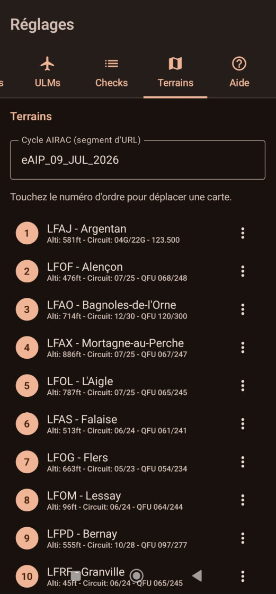
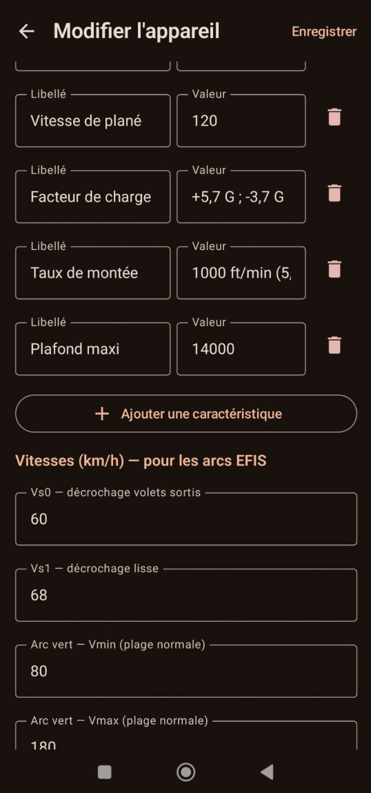

🗺
Terrains
Cycle AIRAC calculé automatiquement · liste réorderable des terrains VAC · ajout
Cycle AIRAC · calcul auto
Terrain · OACI / nom / circuit


Possibilités
- Cycle AIRAC calculé automatiquement d'après la date du système et pré-rempli quand le champ est vide.
- Le champ reste entièrement modifiable pour une correction manuelle ; un texte d'aide rappelle le cycle calculé (ex. « Cycle en cours calculé : 01_OCT_2026 »).
- Bouton « Aujourd'hui » pour revenir au cycle courant en un geste dès que la valeur diffère du cycle calculé.
- La valeur stockée n'est que le segment variable
DD_MON_YYYY(ex.01_OCT_2026), mois en abréviation anglaise 3 lettres majuscules (JAN, FEB, … DEC) ; le préfixeeAIP_est intégré à l'URL. Les anciennes valeurs préfixées sont migrées automatiquement. - Ajout / édition / suppression de terrains VAC, avec liste réorderable.
Fiche terrain
- Code OACI et nom du terrain.
- Altitude et circuit.
- Coordonnées du terrain.
- Station météo (METAR/TAF) disponible ou non.
Téléchargement
- Le téléchargement des PDF VAC et la vérification des mises à jour se font désormais dans l'onglet Données.
Utilisation
- Les terrains renseignés alimentent l'instrument « Terrains proches ».
- … ainsi que le radar météo.